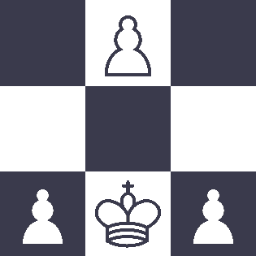

ChessL
Compact, Human-Editable, Simple Serialization Language
ChessL is a simple serialization and configuration language inspired by TOML and SDLang. It's a superset of JSON that's simple to understand, readable, and easy to edit by hand.
Why?
- JSON is great, but it has a very low signal-to-noise ratio. It’s uncomfortable to edit by hand, and to read.
- YAML, while human-friendly, is an unholy behemoth of a language. The specification is infamous for being more than ten times the size of the JSON spec, with many redundant or unnecessary features (including 9-63 ways of writing a multi-line string).
- TOML is nice for configuration files (which are basically a huge map of key:value pairs), but not as nice for heavily nested objects.
- SDLang is great, but very uncomfortable to work with (as it’s pretty much syntactic sugar for XML) and doesn’t have a stable implementation in most sensible languages (Ruby, PHP, but not C? Come on).
There exists no serialization format I could find that makes it easy to preserve definition order in associative arrays and to work with them.
In most JSON implementations, for example, you have two options for an order-preserving associative array:
-
A list of pairs (makes it terrible to look up values by their key, which defeats the purpose of an associative array):
{ "order_preserving_map": [ ["key1", "value1"], ["key2", "value2"] ] }
-
A normal object with a separate list of keys (makes it even worse to edit by hand):
{ "obj": { "key1": "value1", "key2": "value2" }, "obj_keys": ["key1", "key2"] }
Neither of the two is acceptable for data meant to be edited by hand.
Goals
-
Simple, unambigous grammar.
One way of specifying multiline strings is fine. We don’t need 63.
-
Human-readable and human-editable.
YAML, while extremely easy to read, is easily one of the hardest config/serialization languages to edit. JSON has too low a signal-to-noise ratio. SDLang and TOML are excellent, but do not fit the other criteria.
-
Easy to work with in code.
XML-style tree traversal is not easy to work with. JSON-style indexing is easy to work with. JSONPath and XPath are easy to work with.
-
Minimal.
If in doubt, it’s better to leave processing to the user than to the parser. We don’t need a separate datetime type, since every program that needs to work with dates already has a datetime library that can parse strings.
-
Strict.
The more errors a ChessL parser throws when trying to parse invalid ChessL, the better.
-
Associative arrays preserve order.
This is an implementation detail, but any compliant implementation should preserve order in associative arrays, with an optional flag to disable this behavior.
-
Elements of associative arrays and lists can have attributes.
This is a feature inspired by SDLang. While unconventional and somewhat weird to work with in many programming languages, I’ve found that it dramatically boosts the human-readability and human-editability of the language.
Syntax
# This is a comment.
# Data types
numbers: [
# Integers
42
# Decimals
3.14
# Exponential notation
6.022e23
]
strings: [
"Single-line strings, surrounded by \"quotes\". Here's a newline: \n",
`Raw strings (in backticks). This is a backslash and the letter "n": \n`,
"""
Triple-quoted strings can span multiple lines. All leading whitespace
inside is trimmed to the first non-whitespace character of the first line.
The first three lines won't be indented, but this one will:
Indented line
You can also escape newlines with backslashes: \
this will be on the same line!
A single newline after the opening quotes and before the closing ones is
optional and stripped by the parser.
"""
]
booleans: [true false]
"null": null
lists: [
# Elements in lists and maps are separated by commas...
[1, 2, 3]
# or whitespace! However, if you use commas, you must use them for every
# element:
#
# [3, 4 5] <- syntax error!
#
# This, however, is fine, as the separators for inner and outer objects
# don't need to be the same.
[3 4 5]
[6 7 8] (
comment: "List and map elements can have attributes!"
elaboration: "They work exactly the same as maps."
)
]
maps: {
key: "value"
_keys-can-be-unquoted: true
# A bare key must start with an ASCII letter or underscore, and may only
# contain ASCII letters, numbers, underscores and hyphens. These are all
# syntax errors:
#
# 1numeric_key: "nope"
# key with spaces: "bad"
# key,with,commas: "very bad"
# key:with:colons: "how do you expect to parse this"
# key🤦♀️with🤦♀️emoji: "this has too many problems to allow"
#
# If you need any of those, just quote your keys!
":) with quotes, it's ok! 👌": true
1: "numbers, booleans, and null can be keys too"
true: false
null: null () # An empty attribute list is allowed, but meaningless.
}
License
Copyright © 2019, Slavfox.

The contents of this website are licensed under the
Creative Commons
Attribution 4.0 International License .